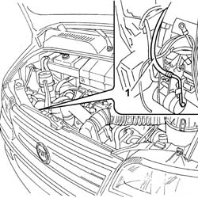
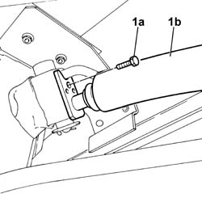
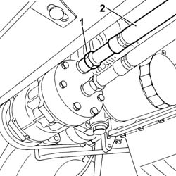
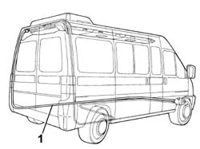

5040A58 PIPE FROM EXPANSION VALVE TO COMPRESSOR - R+R
- Path
- Procedures > 50 AUXILIARY UNITS > 5040 AIR CONDITIONING CASING AND COMPONENTS > 5040A CHECKING OPERATION OF AIR CONDITIONER (TEMPERATURE) > 5040A58 PIPE FROM EXPANSION VALVE TO COMPRESSOR - R+R
- Kind
- repair procedure (removal / refitting; the operation number is the code)
- Applies to
- all engines; all production periods
- Interactive page
- https://sloeber94.github.io/elrnDB-fDct/en/#/244001276
Applies to: engines: 2.8 JTD 8V; all production periods
 Removing
Removing
 Refitting
RefittingOp. 0010T84 COOLANT FOR AIR CONDITIONING SYSTEM DEHYDRATE AND RECHARGE
Disconnect the negative battery terminal.
Op. 7055B54 UNDER-ENGINE GUARD - R R
. Unscrew the connectors of the delivery and return pipes on the compressor.
. Release the pipes from the bracket.
Unscrew the bolt securing the pipe to the expansion valve.
1. Remove the pipe from the compressor to the expansion valve.

Applies to: engines: 2.8 JTD 8V; all production periods
Refitting
RemovingConnect the pipe to the expansion valve and tighten the bolt to torque.
Connect the delivery and return pipes to the compressor and tighten the connectors to the specified torque.
Valore daNm | Fastening | Component | Ø | |
|---|---|---|---|---|
. | 4,0 | Connector | EXPANSION VALVE PIPE / COMPRESSOR (A.C.) | - |
Valore daNm | Fastening | Component | Ø | |
|---|---|---|---|---|
. | 4,0 | Connector | PIPE COMPRESSOR/CONDENSER (A.C.) | - |
Secure the pipes to the bracket and tighten the nut.
Op. 7055B54 UNDER-ENGINE GUARD - R R
Connect the negative battery terminal.
Op. 0010T84 COOLANT FOR AIR CONDITIONING SYSTEM DEHYDRATE AND RECHARGE
Applies to: all engines; all production periods; only with equipment: Supplementary air conditioner
Removing
Refitting- Place the vehicle on a lift.
- Disconnect the negative battery terminal.
Op. 0010T84 COOLANT FOR AIR CONDITIONING SYSTEM DEHYDRATE AND RECHARGE
Op. 5040A44 AIR CONDITIONER DEHYDRATING FILTER/ACCUMULATOR - R+R
Left side
Op. 7210E68 REAR BUMPER - SIDE ELEMENT
Left side
Op. 5010B65 EVAPORATOR/CONVEYOR UNIT MIDDLE LINING on the roof panel - R.R.
Op. 5010B61 EVAPORATOR/CONVEYOR UNIT SIDE LINING on the roof panel, left or right (one) - R.R.
Left side
1. Undo bolt (1a) and disconnect pipe (1b) from the expansion valve.

Applies to: all engines; all production periods; only with equipment: Supplementary air conditioner
1. Unscrew the connector.
2. Disconnect the air conditioner pipe from the compressor.

Applies to: all engines; all production periods; only with equipment: Supplementary air conditioner
- Release the pipe from the retaining collar.
1. Remove the air conditioner pipe.

Applies to: all engines; all production periods; only with equipment: Supplementary air conditioner
Refitting
Removing- Place the pipe in its seat and tighten the connector on the compressor side and expansion valve side.
- Replace the pipe retaining collars.
Op. 5010B61 EVAPORATOR/CONVEYOR UNIT SIDE LINING on the roof panel, left or right (one) - R.R.
Left side
Op. 5010B65 EVAPORATOR/CONVEYOR UNIT MIDDLE LINING on the roof panel - R.R.
Op. 7210E68 REAR BUMPER - SIDE ELEMENT
Left side
Op. 5540A44 L/H OR R/H TAIL LIGHT (ONE) - R+R
Left side
Op. 0010T84 COOLANT FOR AIR CONDITIONING SYSTEM DEHYDRATE AND RECHARGE
- Connect the negative battery terminal.
- Remove the vehicle from the lift.
Topics linked from this page (7)
- 0010T84 COOLANT FOR AIR CONDITIONING SYSTEM DEHYDRATE AND RECHARGE
- 5010B61 EVAPORATOR/CONVEYOR UNIT SIDE LINING on the roof panel, left or right (one) - R.R.
- 5010B65 EVAPORATOR/CONVEYOR UNIT MIDDLE LINING on the roof panel - R.R.
- 5040A44 AIR CONDITIONER DEHYDRATING FILTER/ACCUMULATOR - R+R
- 5540A44 L/H OR R/H TAIL LIGHT (ONE) - R+R
- 7055B54 UNDER-ENGINE GUARD - R R
- 7210E68 REAR BUMPER - SIDE ELEMENT